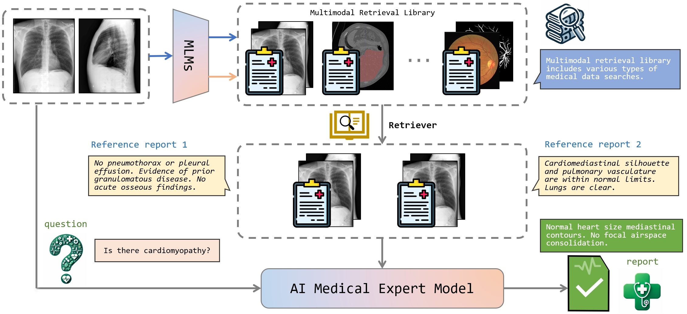

This project is led by a team of researchers and developers with expertise in AI, healthcare, and medical research:
Dr. Xiu Su: Principal Investigator
Dr. Yichao Cao: Research Collaborator
Team Members: [Zhaoqi Duan]
Research Objectives

Figure 1: AI medical expert model framework
The primary goal of the AI Medical Expert Hub project is to leverage AI and multimodal technologies to build an intelligent medical expert system. Specific objectives include:
Developing an AI-powered diagnostic support system.
Enhancing decision-making through multimodal data integration.
Improving healthcare outcomes using intelligent recommendations.
Current Progress
We have achieved the following milestones so far:
Completed the design of the multimodal integration framework.
Implemented a prototype for disease-specific diagnostic support.
Developed initial data pipelines for processing multimodal medical data.